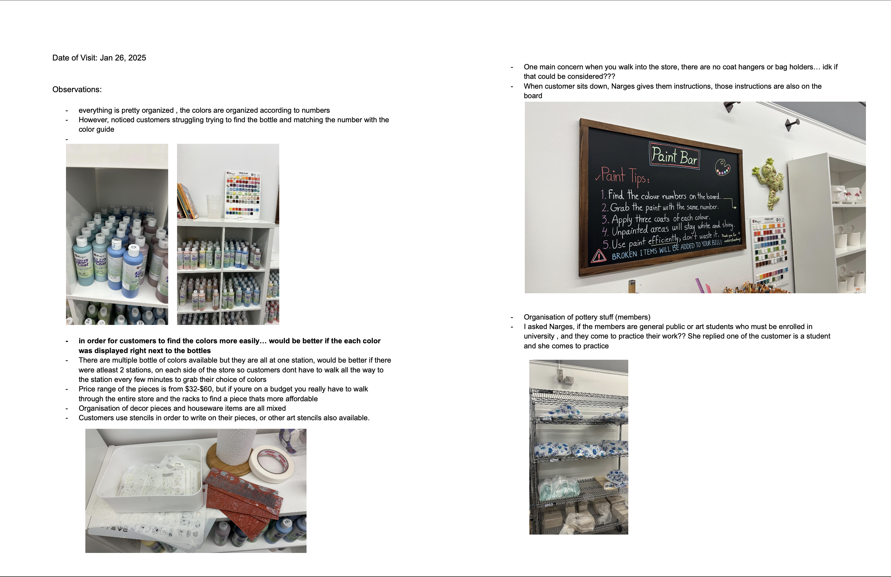
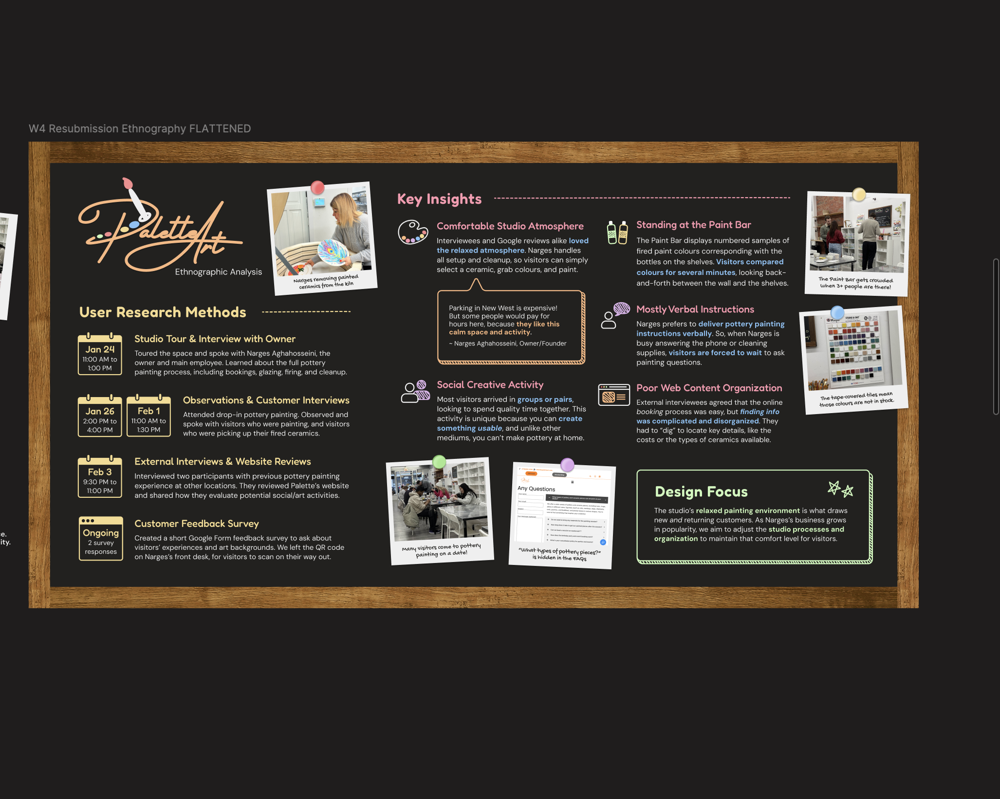
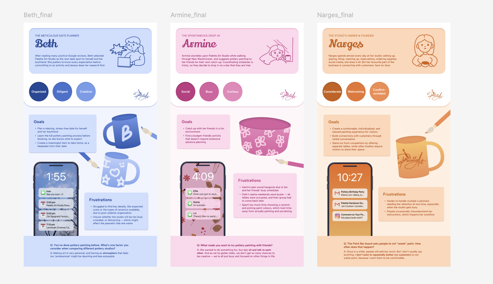
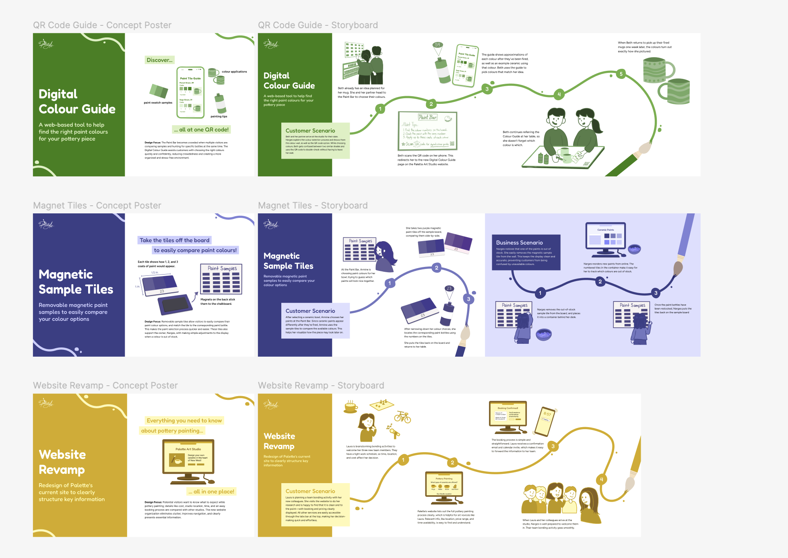
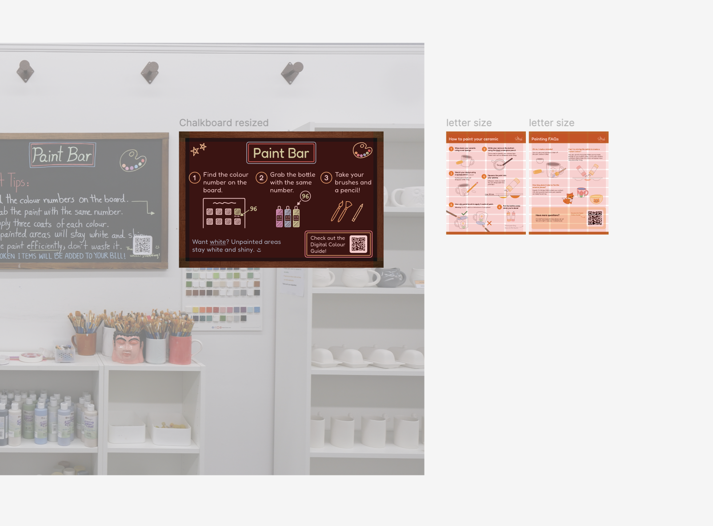

The Glazing Guide
Jan 2025 - April 2025
Team Members: Manmeet Sagri, Amanda Eng, Victoria Lo, Christine An
Role: UX Researcher & Interaction Designer
Tools: Figma, FigJam, Google Docs
The Glazing Guide is a three-month IAT 333 (Interaction Design Methods) project completed in a collaborative
team of four, in partnership with Palette Art Studio.
Customers at the studio often struggled with the multi-step glazing process due to verbal-only instructions,
long colour-selection times, and crowding at the Paint Bar. These issues created confusion for first-time
visitors and increased the workload for staff during busy hours.
To improve clarity and independence, our team designed a system of three connected tools: a Digital Colour
Guide, Table Infographics, and a Redesigned Chalkboard. Our process included field research, user interviews,
weekly design retrospectives, concept development, and multiple rounds of prototyping. The final system
supports a smoother, more intuitive painting experience for both customers and staff.
The Process…
Field Research & On-Site Observation


I conducted in-person field research at Palette Art Studio, where I interviewed the studio owner and
customers, observed live painting sessions, and documented findings through notes and photo evidence. During
this visit, I identified key usability issues in the glazing process, including customer confusion when
matching colour numbers to paint bottles, reliance on verbal instructions, and congestion around a single
Paint Bar station. Insights from my observations and interviews highlighted the need for clearer visual
guidance and more independent colour exploration, helping to map out the participant group, document core
customer pain points, and build a strong foundation for the project.
Phase 2: Synthesis & Problem Framing


After gathering data, we organized our findings into personas, journey maps, and a reframed design
problem. Customers needed clearer, more accessible guidance, while the studio needed a way to reduce
repeated questions and crowding. Our weekly design retros helped us stay aligned, reflect on what
was working, and identify areas for improvement as we moved into ideation.
Phase 3: Ideation & Concept Development


Using the insights from our research, we explored multiple concept directions through sketches and
collaborative brainstorming sessions. As a team, we generated three early concepts, refined them
into two stronger options, and prepared a workshop presentation. One of my key contributions during
this phase was proposing the idea of a mobile-friendly HTML colour guide, which later shaped the
direction of our final solution. Throughout these weeks, we met frequently to share ideas,
reorganize content, and strengthen the clarity of our designs.
Phase 4: Design & Prototyping


We moved into detailed design work, creating the Digital Colour Guide, Table Infographics, and a
redesigned Paint Bar chalkboard. Most of our visual design and layout decisions were explored
directly in Figma, which made it easy to collaborate and iterate. I worked on the Digital Colour
Guide’s interface, helping translate our research and ideas into a clean, simple prototype. We
continuously refined the visuals, wording, and user flow, checking alignment through team critiques
and weekly retros.
Phase 5: Final System & Outcomes
The final Glazing Guide combines three connected resources that support a smoother studio experience:
the Digital Colour Guide helps customers browse colours independently; the Table Infographics
provide simple illustrated instructions and FAQs; and the Redesigned Chalkboard gives clear,
step-by-step guidance for choosing paint.
Together, these interventions reduce crowding, lessen the studio owner’s workload, and help
customers feel more confident throughout the glazing process.
Challenges and Reflection
This project ended up being the closest thing I have experienced to real professional work, and it
genuinely changed how I approach design. My teammates had completed co-op terms before, so they
understood how to stay organized, plan ahead, and give honest critiques. Working with them pushed me to
level up, and I learned how valuable consistency, clear communication, and thoughtful feedback are in
producing strong work.
Being part of a team that cared about quality motivated me to push my creativity further. I became more
confident in sharing ideas, contributing to research, and taking ownership of key parts of the project,
especially the Digital Colour Guide interface. Watching my teammates illustrate so confidently also
encouraged me to build my own visual skills, which I continued to develop in my later projects.
Through weekly critiques, retros, and constant check-ins, I learned how to communicate more clearly,
stay on top of deadlines, and participate in ideation with more confidence. I also became more open to
experimenting with visual work instead of avoiding it, and that helped me grow in ways I did not
expect.
Overall, The Glazing Guide taught me how collaborative design really works and how much growth happens
when you work with people who inspire you. I became more organized, more self-assured, and more willing
to explore creativity outside my comfort zone. It helped me enjoy my projects more deeply and understand
the designer I want to become.